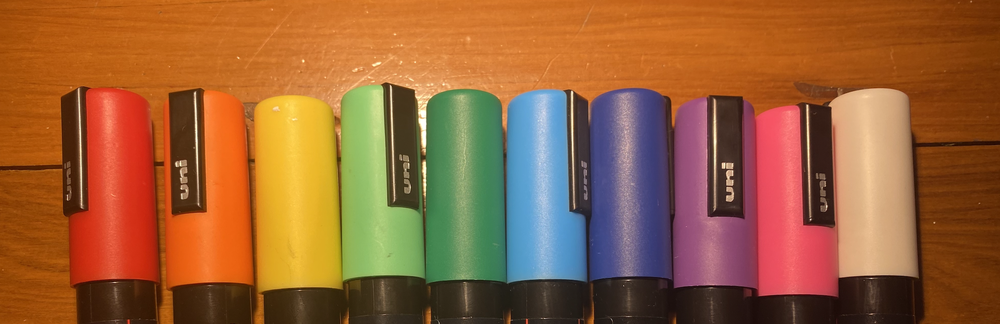
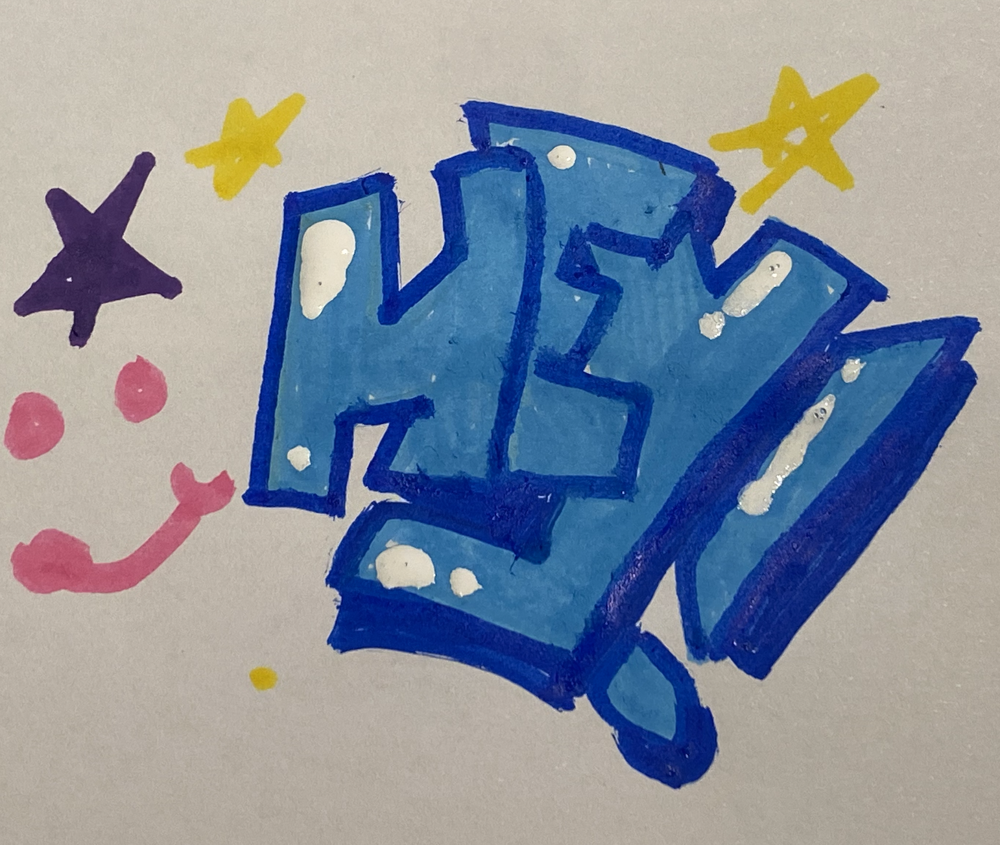

Ohuhu Alcohol Markers
Ive had my Ohuhu’s for years now, and they’re probably my most used art supply. They provide many functions, allowing smooth blending, sharp lines and proper pigment and inking for all my colouring needs. These are first on my recommended list, as I believe they are one of the best tools for beginners, allowing new artists to explore and create with ease.
 Posca Paint Pens
While I only got my Posca Pens last year, they have proven to be highly useful. Not only do they smoothly transfer onto a range of surfaces, they produce a good, even and pigmented amount of paint to decorate anything as you please. I personally love using poscas on wooden surfaces, and have used them to customise my skateboard. Poscas/paint pens as a general are on my recommended list, as I think they are a highly useful tool for any artist.